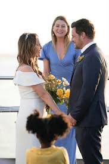

Tudo sobre Alex Karev
Quando Alex tinha sete anos, ele teve que começar a limpar seu pai bêbado e viciado em drogas. Nesse ponto, ele se tornou o adulto da família, pois sua mãe era esquizofrênica. Alex se descreveu como "criado em um bar" e que seu pai nunca o levou para o parque ou para acampar.
Depois que o pai de Alex partiu, ele cuidou de sua mãe e de seus irmãos. Alex esteve em 17 lares adotivos diferentes ao longo de 5 anos. Ele também passou algum tempo em detenção juvenil por roubar comida para sua família. [2] Ele também admitiu sua mãe em uma unidade psiquiátrica em um ponto. Quando ele tinha 12 anos, ele roubou um carro.
Ele perdeu o baile da escola porque seu pai chegou em casa e estava bêbado e começou a quebrar as coisas em casa, então Alex ficou em casa com ele. Ele tinha uma data de formatura de quem gostava e até comprou uma pulseira para ela, mas nunca mais falou com ela porque sentiu que a levantou e pensou que ela não iria querer falar com ele novamente
Em algum momento, Alex mudou legalmente seu sobrenome para Karev, nome de solteira de sua mãe, para se desassociar de seu pai, James Evans. . Depois que a avó de Alex morreu, ele teve um sonho, onde ela lhe disse para não brincar com as partes dele
Ele estudou na Universidade de Iowa , onde lutou
Estágio Inicial na SGH
Alex iniciou seu estágio no mesmo dia Meredith , George , Cristina e Izziefez. Ele foi inicialmente designado para um morador diferente, chamado Jeremy, que os outros quatro. No primeiro dia, Meredith salvou um de seus pacientes de uma complicação pós-operatória na frente do chefe depois que Alex dispensou a enfermeira e Meredith várias vezes. Mais tarde, ele ingressou no serviço de Miranda Bailey, depois que seu primeiro residente o abandonou por motivos desconhecidos. Ele não se dava bem com seus colegas devido à sua atitude no trabalho. Por exemplo, ele escolheria apenas os casos bons e interessantes e os roubaria de seus colegas. Depois de algumas semanas, os outros internos souberam de seu lado mais suave e compreensivo e se tornaram amigos. Izzie gostava particularmente dele e foi o primeiro a notar o outro lado mais agradável dele.
No começo, ele disse a todos que sua especialidade de sonho era cirurgia plástica , mas depois que ele conheceu a especialidade mais de perto, Alex descobriu que não era para ele. Ele queria entrar no plástico porque, na maioria das vezes, os pacientes escolhiam sua dor de bom grado. Depois de um longo período com Addison Forbes Montgomery , Alex descobriu que gostava de trabalhar com bebês e começou a desenvolver um grande interesse em cirurgia neonatal .
Principais Relações amorosas
Ele teve várias relações amorosas durante o seriado. Entre elas destacamos:
Izzie Stevens - Se relacionou com Izzie em quase toda temporada, mas por querer parecer arrogante, sempre estragava tudo. Porém, quando Izzie descobre um tumor em seu cérebro, na 5ª temporada, ele resolve se redimir e eles casam-se.
Jo Wilson -É apresentada na nona temporada, Jo entra como interna no hospital. No início diz que nunca ficaria como Alex por ter saído como muita gente, incluindo alguma de suas amigas. Numa festa feita pelo hospital, eles se aproximam e ficam. Desde então estão juntos, e Jo mora com o Alex na antiga casa de Meredith Grey, que agora é dele.Depois da morte de Derek, revende a casa para Meredith e vai morar com Jo num loft. Após pegar Jo bêbada roupa intimas com Andrew em cima dela, tira as conclusões precipitadas e o espanca até deixá-lo a beira da morte. Eles se separam mas continuam a ter sentimentos um pelo outro. Jo pensa que Alex foi preso mas ao ir a casa de Meredith o vê lá e os dois se abraçam. Na temporada 14 Alex contam para Jo que encontrou o seu ex-marido e que não lhe fez nada. Jo surpreendida beija-o na sala dos residentes. Ela acaba por pedir-lhe que volte para casa dela e ele aceita. Alguns episódios depois o ex-marido de Jo volta e Karev no princípio não dá conta mas acaba por reconhece-lo e fica muito preocupado com ela. Atualmente estão os dois bem. No último episódios da 14° temporada, Jo e Alex se casam.
Voltar